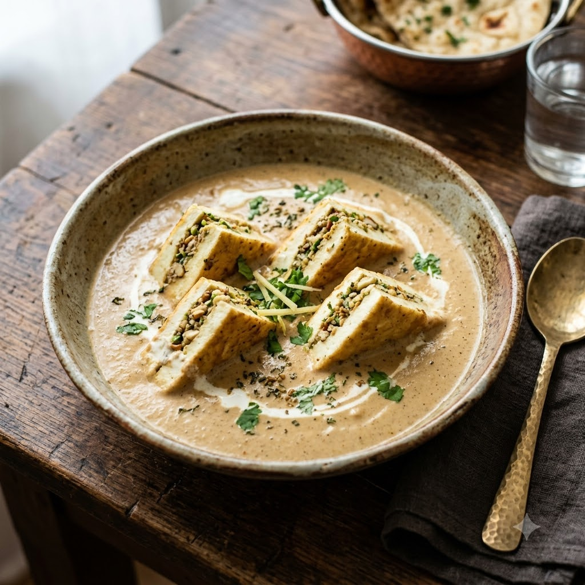

Chef Magic – Sauté Auto 26 min — Serves 4
Prep ahead: Slice the paneer into thin, flat pieces rather than cubes — this is what gives Pasanda its signature look.
Ingredients
Method
Tip: Handle the paneer slices gently once they’re in the gravy — Pasanda pieces are meant to stay whole, not break up like a